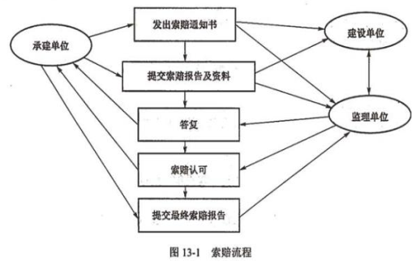

分值：1分
合同的分类
- 范围分类：
- 总承包合同：有利于发挥卖方的专业优势
- 单项承包合同：有利于吸引各多的卖方参与投标竞争，买方可以选择在单项上实力强的卖方
- 分包合同：5个条件
- 经过买方认可
- 分包的部分必须是项目非主体工作
- 只能分包部分项目，不能转包整个项目
- 分包方必须具备相应的资质条件
- 分包方不能在此分包
- 付款方式：
- 总价合同：
- 固定总价合同FFP：固定不再变了，卖方自己承担盈亏
- 总价+激励费用合同FPIF
- 总价+经济价格调整合同FP-EPA：持续时间长的合同
- 成本补偿合同
- 成本+固定费用合同CPFF：成本+买方一次性给一笔利润
- 成本+激励费用合同CPIF：成本+买方根据目标完成百分比支付利润
- 成本+奖励费用合同CPAF：成本+买方凭主观支付一笔利润
- 工料合同T&M：计划价格*实际量，实报实销，激发积极性
- 总价合同：
从风险类型上来讲：
对买方：风险最小的是固定总价合同（FFP）；风险最大的是成本加固定费用合同（CPFF）。对卖方：风险最小的是成本加固定费用合同（CPFF）；风险最大的是固定总价合同（FFP）。
合同类型的选择
- 总价合同
- 适合工作范围明确，项目的设计以具备详细的细节
- 卖方承担成本风险
- 成本合同
- 工作范围不清楚
- 买方承担成本风险
- 工料合同
- 适合工作性质清楚、范围不是很清楚，工作不复杂由需要快速签订合同
- 金额小、工期短、不复杂
- 双方分担风险
- 单项承包合同：购买标准产品，数量不大
合同的内容
- 项目名称
- 标的内容和范围
- 项目的质量要求
- 项目的计划、进度地点、地域和方式
- 项目建设过程中的各种期限
- 技术情报和资料的保密
- 风险责任承担
- 技术成果的归属
- 验收的标准和方法
- 价款、报酬（或使用费）及其支付方式
- 违约金或者损失賠偿的计算方法
- 解决争议的方法
- 名词术语解释
合同管理过程
- 合同签订管理
- 合同履行管理
- 合同变更管理
- 合同档案管理：整个合同管理的基础
- 合同违约索赔管理
关于合同一致理解的建议
- 用国家或行业标准的合同格式。
- 对合同标的的描述务必要达到准确、简练、清晰的标准要求，切忌含混不清。
- 对于合同中需要变更、转让、解除等内容也应详细说明。
- 如果合同有附件，对于附件的内容也应精心准备，并注意保持与主合同一致，不要相互之间产生矛盾
- 对于既有投标书，又有正式合同书、附件等包含多项内容的合同，要在条款中列明适用顺序。
- 保证合同订立的合法性、有效性，当事人可以将签订的合同到公证机关进行公证
解决合同争议的方法
- 谈判协商
- 调解
- 仲裁
- 诉讼
合同索赔
- 索赔的分类：
- 工期索赔
- 费用索赔：经济补偿，非惩罚
- 索赔调解的先后顺序
- 监理工程师调解
- 由政府建设主管机构进行调解
- 经济合同仲裁委员会调解或仲裁
- 索赔的原则
- 索赔的有理性
- 索赔依据的有效性
- 索赔计算的正确性
- 索赔流程
- 提出索赔要求
- 报送索赔资料
- 监理工程师答复
- 监理工程师逾期答复后果
- 持续索赔
- 仲裁与诉讼（28天）
